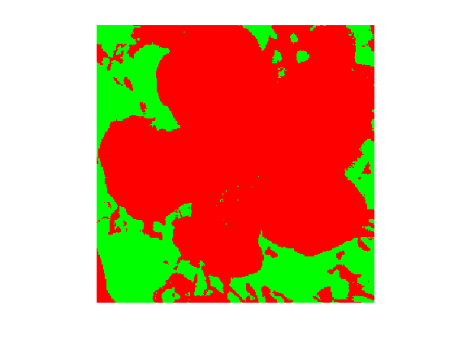
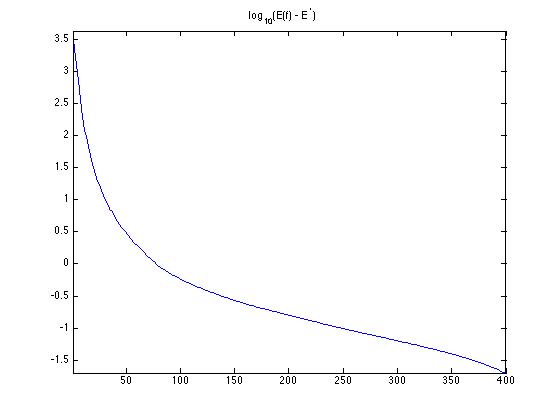
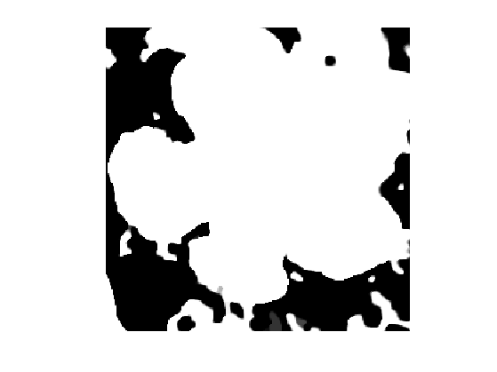
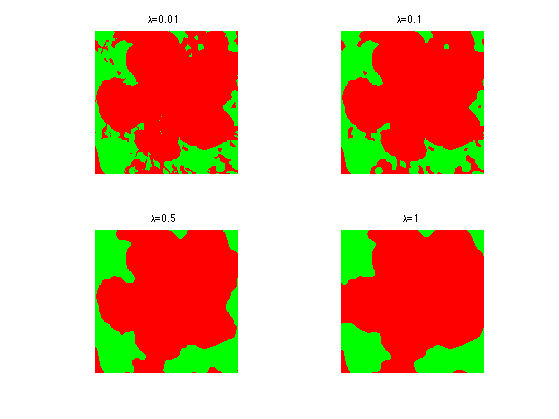

Convex Region-Based Image Segmentation
This numerical tour explores a convex relaxation of the piecewise constant Mumford-Shah. This relaxation is exact, and leads to a global solution to the segmentation problem. It can be solved using proximal splitting scheme, and we propose to use here the Douglas-Rachford algorithm. Of independent interest is the introduction of auxiliary gradient variables that enables the use of purely primal splitting schemes.
Contents
Special thanks to Jalal Fadili for telling me about the "auxiliary variable" trick (i.e. adding the variable \(u=\nabla f\)), that allows one to solve TV regularization without the need to use primal-dual schemes.
Installing toolboxes and setting up the path.
You need to download the following files: signal toolbox and general toolbox.
You need to unzip these toolboxes in your working directory, so that you have toolbox_signal and toolbox_general in your directory.
For Scilab user: you must replace the Matlab comment '%' by its Scilab counterpart '//'.
Recommandation: You should create a text file named for instance numericaltour.sce (in Scilab) or numericaltour.m (in Matlab) to write all the Scilab/Matlab command you want to execute. Then, simply run exec('numericaltour.sce'); (in Scilab) or numericaltour; (in Matlab) to run the commands.
Execute this line only if you are using Matlab.
getd = @(p)path(p,path); % scilab users must *not* execute this
Then you can add the toolboxes to the path.
getd('toolbox_signal/'); getd('toolbox_general/');
Binary Segmentation
We consider some input image \(I(x) \in \RR^d\) (\(d=1\) for grayscale image and \(d=3\) for color images). Given weights \(w_0\) and \(w_1\) computed from \(I\), where \(N\) is the number of pixel, the goal is to find a region \(\Om\) that minimize \[ \umin{\Om} \int_\Om w_0(x) d x + \int_{\Om^c} w_1(x) d x + \la \abs{\partial \Om}, \] where \(\abs{\partial \Om}\) is the perimeter of \(\Om\).
To perform region based piecewise-constant segmentation, we assume we know the target values \(c_0, c_1 \in \RR^d\) for the inside/outside of the segmented domain, and use quadratic weigths \[ \text{for } i=0,1, \quad w_i(x) = \norm{I(x)-c_i}^2. \] We use these weights in all the remaining part of this tour.
In the special case \(\la=0\), no regularization is performed, and the optimal set \(\) is obtained by a simple thresholding \[ \Om = \enscond{x}{ w_0(x) \leq w_1(x). } \]
We load the image \(I\).
name = 'hibiscus';
n = 256;
I = rescale( load_image(name,n) );
Display it.
clf; imageplot(I);
Take as target colors red and green.
c0 = [1;0;0]; c1 = [0;1;0];
Exercice 1: (check the solution) Compute \(w_0\) and \(w_1\). Compute and display the segmentation when \(\la=0\).
exo1;
Define \(w=w_0-w_1\).
w = w0-w1;
Convex Discrete Formulation
If one represents \(\Om\) using its indicator function \(f\) \[ f(x) = \chi_\Om(x) = \choice{ 1 \qifq x \in \Om. \\ 0 \quad \text{otherwise}, } \] this problem is re-casted equivalently \[ \umin{ f(x) \in \{0,1\} } \dotp{f}{w} + \la \norm{f}_{\text{TV}}, \] where \(w=w_0-w_1\) and \(\norm{f}_{\text{TV}}\) is the total variation pseudo-norm, that is equal to \(\abs{\partial \Om}\) for binary indicator \(f=\chi_\Om\). Here the inner product is the canonical one \(\dotp{f}{w}=\int f w\).
The variational problem is discretized on a grid of \(N=n \times n\) pixels, and we define the total variation pseudo-norm, for \(f \in \RR^N\), as \[ \norm{f}_{\text{TV}} = \norm{\nabla f}_1 \qwhereq \norm{u}_1 = \sum_{i=1}^N \norm{u_i}, \] when \(u=(u_i)_{i=1}^N \in \RR^{N \times 2}, u_i \in \RR^2 \) is a vector field.
We use a finite difference gradient operator \[ (\nabla f)_i = (f_{i+\de_1}-f_i, f_{i+\de_2}-f_i) \in \RR^2, \] (we assume the pixels are indexed on a 2-D grid) where \(\de_1=(1,0)\) and \(\de_2=(0,1)\). We use periodic boundary conditions for simplicity.
options.bound = 'per';
Grad = @(x)grad(x,options);
Div = @(x)div(x,options);
The inner product in the objective is discretized using the canonical inner product in \(\RR^N\) \[ \dotp{f}{w} = \sum_{i=1}^N f_i w_i . \]
To obtain a convex program, one replaces the binary constraint \(f_i \in \{0,1\}\) by a box constraint \( f_i \in [0,1] \). This defines the folowing finite dimensional convex problem \[ \umin{ f \in [0,1]^N } \dotp{f}{w} + \la \norm{\nabla f}_{1}. \]
One can prove that this relaxation is exact, meaning that the minimizer \(f\), when it is unique, is binary, \(f \in \{0,1\}^N\). It means that \(\Om\) such that \(f=\chi_\Om\) actually solves the original segmentation problem. See for instance:
Tony F. Chan, Selim Esedoglu, and Mila Nikolova. Algorithms for finding global minimizers of image segmentation and denoising models SIAM J. Appl. Math., 66(5):1632-1648, 2006.
It is possible to generalize this convexification method to the segmentation problem with more than 2 partitions. See for instance:
Antonin Chambolle, Daniel Cremers, Thomas Pock, A convex approach to minimal partitions, Preprint hal-00630947, 2011.
To solve this problem using primal proximal splitting scheme, we introduce an auxiliary variable \(u=\nabla f\), and write the optimization problem as \[ \umin{z=(f,u) \in \Zz = \RR^N \times \RR^{N \times 2} } F(z) + G(z) \qwhereq \choice{ F(f,u) = \dotp{f}{w} + \iota_{[0,1]^N}(f) + \la \norm{u}_1, \\ G(f,u) = \iota_{\Cc}(f,u), } \] where here we included the constraints using indicator functions \[ \iota_{A}(z) = \choice{ 0 \qifq z \in A, \\ +\infty \quad \text{otherwise}. } \] The constraint linking \(f\) to \(u\) is \[ \Cc = \enscond{z = (f,u) \in \Zz}{ u=\nabla f }. \]
Douglas-Rachford Algorithm
To minimize the segmentation energy, we will make use of proximal splitting scheme. These scheme are adapted to solve structured non-smooth optimization problem.
They basically replace the traditional gradient-descent step (that is not available because neither \(F\) nor \(G\) are smooth functionals) by proximal mappings, defined as \[ \text{Prox}_{\gamma F}(z) = \uargmin{y} \frac{1}{2}\norm{z-y}^2 + \ga F(y) \] (the same definition applies also for \(G\)).
The Douglas-Rachford (DR) algorithm is an iterative scheme to minimize functionals of the form \[ \umin{z} F(z) + G(z) \] where \(F\) and \(G\) are convex functions for which one is able to comptue the proximal mappings \( \text{Prox}_{\gamma F} \) and \( \text{Prox}_{\gamma G} \).
The important point is that \(F\) and \(G\) do not need to be smooth. One onely needs then to be "proximable".
A DR iteration reads \[ \tilde z_{k+1} = \pa{1-\frac{\mu}{2}} \tilde z_k + \frac{\mu}{2} \text{rPox}_{\gamma G}( \text{rProx}_{\gamma F}(\tilde z_k) ) \qandq z_{k+1} = \text{Prox}_{\gamma F}(\tilde z_{k+1},) \]
We have use the following shortcuts: \[ \text{rProx}_{\gamma F}(z) = 2\text{Prox}_{\gamma F}(z)-z \]
It is of course possible to inter-change the roles of \(F\) and \(G\), which defines another set of iterations.
One can show that for any value of \(\gamma>0\), any \( 0 < \mu < 2 \), and any \(\tilde z_0\), \(z_k \rightarrow z^\star\) which is a minimizer of \(F+G\).
Please note that it is actually \(z_k\) that converges, and not \(\tilde z_k\).
To learn more about this algorithm, you can read:
Proximal Splitting Methods in Signal Processing, Patrick L. Combettes and Jean-Christophe Pesquet, in: Fixed-Point Algorithms for Inverse Problems in Science and Engineering, New York: Springer-Verlag, 2010.
Proximal Operator of \(G\)
The proximal mapping of \(G\) is the orthogonal projection on the convex set \(G\): \[ (\tilde f, \tilde u) = \text{Prox}_{\ga G}(f,u) = \text{Proj}_\Cc(f,u). \]
It can be computed by solving a linear system of equations since \[ \tilde u = \nabla \tilde f \qwhereq \tilde f = (\text{Id}_N - \Delta)^{-1}(f-\text{div}(u)). \] Here, by convention, \(\Delta=\text{div} \circ \nabla\) and \(\text{div}=-\nabla^*\).
Since we use periodic boundary conditions for the gradient operator, it is possible to solve this linear system in \(O(N \log(N))\) operations using the FFT algorithm. Note that a similar method can be used with non-periodic Neumann condition (this requires to extend by symmetry the image).
One indeed has \[ \forall \om=(\om_1,\om_2), \quad \hat {\tilde f}(\om) = \frac{\hat g(\om)}{K(\om)} \qwhereq K(\om) = 1+4\sin\pa{\frac{\pi \om_1}{n}}^2+4\sin\pa{\frac{\pi \om_2}{n}}^2, \] where \(g = f-\text{div}(u)\) and where \(\hat g\) is the 2-D discrete Fourier transform of an image \(g\).
Compute \(K(\om)\).
[X Y] = meshgrid(0:n-1, 0:n-1); K = 1 + 4*sin(X*pi/n).^2 + 4*sin(Y*pi/n).^2;
Define Proj\(_\Cc\).
Replicate = @(z)deal(z, Grad(z)); ProjC = @(f,u)Replicate( real( ifft2( fft2( f - Div(u) ) ./ K ) ) );
One has \(\text{Prox}_{\ga G} = \text{Proj}_{\Cc}\), whatever the value of \(\ga\).
ProxG = @(f,u,gamma)ProjC(f,u);
Proximal Operator of \(F\)
Recall that the function \(F(f,u)\) is actully a separable sum of a function that only depends on \(f\) and a function that depends only on \(u\): \[ F(f,u) = F_0(f) + \la \norm{u}_1 \qwhereq F_0(f) = \dotp{f}{w} + \iota_{[0,1]^N}(f) \] The proximal operator of \(F\) reads \[ \text{Prox}_{\ga F}(f,u) = ( \text{Prox}_{\ga F_0 }(f), \text{Prox}_{\ga \la \norm{\cdot}_1 }(u) ). \]
Define the value of \(\la>0\) (you can change this value).
lambda = .1;
The proximal operator of \(F_0\) is obtained by using the projection on the box constraint \[ \text{Prox}_{\ga F_0 }(f) = \text{Proj}_{[0,1]^N}( f - \ga w ) \qwhereq \text{Proj}_{[0,1]^N}(g) = \max(0,\min(1, g)). \]
ProxF0 = @(f,gamma)max(0, min(1, f-gamma*w) );
The proximal operator of the \( \ell^1-\ell^2 \) norm \(\norm{\cdot}_1\) is a soft thresholding of the amplitude of the vector field: \[ \text{Prox}_{\ga \norm{\cdot}_1}(u)_i = \max\pa{ 0, \frac{\ga}{\norm{u_i}} } u_i. \]
amplitude = @(u)repmat( sqrt( sum(u.^2, 3) ), [1 1 2]); ProxL1 = @(u,gamma)max(0,1-gamma./max(1e-9, amplitude(u))) .* u;
Define the proximal operator of \(F\).
ProxF = @(f,u,gamma)deal( ProxF0(f,gamma), ProxL1(u,gamma*lambda) );
Douglas-Rachford for Convex Segmentation
Set the value of \(\mu\) and \(\gamma\). You might consider using your own value to speed up the convergence.
mu = 1; gamma = 1;
Number of iterations.
niter = 800;
Exercice 2: (check the solution) Implement the DR iterative algorithm on niter iterations. Keep track of the evolution of the minimized energy \[ E(f) = \dotp{w}{f} + \la \norm{\nabla f}_1 \] during the iterations. Remark: to speedup the convergence, you can use a "clever" initialization.
exo2;
Display the result image \(f\) at convergence. Note that \(f\) is almost binary.
clf; imageplot(f);
Exercice 3: (check the solution) Test with different value of the \(\lambda\) parameter.
exo3;